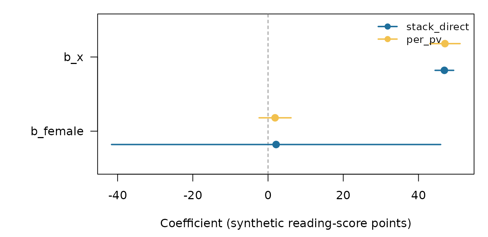

A4: Comparing methods — choosing stack_direct, per_pv, or stack_psis
JoonHo Lee
2026-08-14
Source:vignettes/a4-comparing-methods.Rmd
a4-comparing-methods.RmdAbstract
pvstackr ships three fitting methods. This vignette uses
pv_compare_methods() to align
stack_direct, per_pv, and
stack_psis on the same data and shows how to read the
agreement diagnostics. It states the two cautions plainly — design
variance is not optional, and a small Pareto-k does not imply a
correct stack_psis variance — and gives the rule of
thumb: use stack_direct, keep stack_psis
as a cross-check, and treat per_pv as the
reference.
Vignettes A1–A3 lived entirely inside one method: load a
stack_direct fit, read its estimate table, and decide what
is safe to report. This vignette steps back to the choice
between methods. pvstackr ships three —
stack_direct, per_pv, and
stack_psis — and pv_compare_methods() aligns
them on the same fixed-effect terms so you can read them side by side.
The point of the article is not to crown a winner on a toy dataset; it
is to show the comparison machinery and the
interval semantics that separate the methods, and to
state the two cautions that govern when agreement means something.
A note on the worked example below. We feed per_pv
synthetic, injected posterior draws (random noise
centred near the fixture’s coefficients), because the package ships only
one cached fit and runs no live MCMC. For stack_psis, the
example deliberately supplies equal placeholder weights and arbitrary
Pareto-\(\hat k\) values
without claiming that PSIS ran. The fit therefore fails
closed and remains visible as a blocked comparison row. Read this
article for the structure of a comparison and the
interval semantics, not as a substantive agreement
result.
1. The three methods in one table
The three methods answer the same question — what is the fixed-effect block \(\beta_{\text{FE}}\)? — but they get their variance from different places, and that difference is the whole story of when a row may carry a coverage claim.
| Method | Covariance basis | Interval status | Fit count |
|---|---|---|---|
stack_direct (default)
|
design-based external \(T_{\text{MI}}\) (Rubin / BRR–Fay) | conditional — coverage-claimable only with an external Barnard–Rubin BRR–Fay target; descriptive under classic df | 1 |
per_pv |
model-based posterior | descriptive / reference | \(M\) |
stack_psis |
model-based posterior + PSIS reweighting | descriptive / reference | 1 (+ PSIS) |
In one sentence each:
-
stack_directfits one stacked model and calibrates it (via CCC) to an external, design-based Rubin / BRR–Fay target. Because that target’s covariance is design-based,stack_directrows are the only ones the package ever markscoverage_claim_allowed = TRUE(Judkins 1990; Rubin 1987). -
per_pvis the orthodox path: fit the model once per plausible value and pool the \(M\) model-based results with Rubin’s rules. It is the natural reference, but its covariance is model-based, so its intervals stay descriptive. -
stack_psisreweights a single stacked draw cloud with per-PV Pareto-smoothed importance sampling (Vehtari et al. 2017, 2024), pooling the PSIS-weighted summaries. One fit, model-based covariance — a cross-check, never the deliverable.
The “fit count” column is topology, not speed. It records how many model fits a method’s architecture requires — one stacked fit versus \(M\) separate ones — not a benchmarked runtime. The current package makes no “faster” claim; see the honesty triad in Section 7.
Two scope reminders carried over from A1–A3, because they bound this
whole comparison: the reportable surface is fixed effects
only, and coverage lives on exactly one path
(stack_direct against an external Barnard–Rubin BRR–Fay
target). Everything below respects both.
2. Run a comparison — pv_compare_methods()
pv_compare_methods() takes two or more already-built
pvstackr_fit objects and aligns their fixed-effect estimate
tables. It does not fit anything — you hand it finished
fits — so the only setup is building three fits that share the same
fixed-effect names (b_Intercept, b_x,
b_female).
The first fit is the cached stack_direct fixture you
already met in A1. The other two use injected synthetic inputs:
pv_fit_reference() accepts a list of per-PV posterior draw
matrices, and pv_fit_stack_psis() accepts a stacked draw
matrix plus weight diagnostics. No live MCMC or PSIS routine runs below.
Consequently, the PSIS example intentionally omits producer/version and
must remain blocked; a string label is not evidence that smoothing
occurred.
fe <- c("b_Intercept", "b_x", "b_female")
fit_direct <- readRDS(
system.file("extdata", "examples", "pisa_tiny_stack_direct.rds",
package = "pvstackr")
)$fit
# Synthetic per-PV draw clouds, centred near the fixture's coefficients
# (~458 / 47 / 2). These are random noise for illustration, NOT real posteriors.
set.seed(1)
mk <- function(mu) {
d <- matrix(rnorm(300 * 3, sd = 2), ncol = 3, dimnames = list(NULL, fe))
sweep(d, 2L, mu, "+")
}
fit_per_pv <- pv_fit_reference(
per_pv_draws = list(PV1READ = mk(c(458, 47, 2)),
PV2READ = mk(c(458, 47, 2))),
control = pv_control(method = "per_pv")
)
# Synthetic stacked draw cloud + equal placeholder weights and arbitrary
# Pareto-k. Nothing is importance-sampled live, so producer/version are omitted
# and the fit must fail closed as provenance_incomplete.
sd_mat <- mk(c(458, 47, 2))
fit_psis <- pv_fit_stack_psis(
stacked_draws = sd_mat,
pv_cols = c("PV1READ", "PV2READ"),
psis_weights = matrix(1 / nrow(sd_mat), nrow = nrow(sd_mat), ncol = 2),
pareto_k = c(0.2, 0.2),
control = pv_control(method = "stack_psis")
)With two reportable fits and one intentionally blocked fit in hand, the comparison is one call:
cmp <- pv_compare_methods(
stack_direct = fit_direct,
per_pv = fit_per_pv,
stack_psis = fit_psis
)
cmp
#> pvstackr method comparison
#> reference: per_pv
#> methods: stack_direct=stack_direct, per_pv=per_pv, stack_psis=stack_psis
#> fixed effects: 3
#> blocked: stack_psis
#> provenance note: Agreement bands are descriptive; shared target, pooling, or source metadata should not be read as independent corroboration.
#> interval note: intervals are descriptive rather than coverage-claimable.The print() box names the reference
method (here per_pv, the default when a
non-blocked per_pv fit is present), lists the three
labelled methods, and confirms the comparison aligned on 3
shared fixed-effect terms. It then prints two honest one-liners
that recur throughout this article:
- a provenance note — agreement bands are descriptive and shared target/pooling/source metadata is not independent corroboration (Section 4); and
- an interval note — at least one compared interval is descriptive rather than coverage-claimable (Sections 3, 5–7).
Comparison aligns methods on their shared
fixed-effect terms. The two reportable methods supply
b_Intercept, b_x, and b_female;
the blocked stack_psis fit still gets one row for each
term, with numeric fields left NA rather than silently
disappearing.
3. The three methods side by side
get_estimates() on a comparison returns the
aligned table: one row per (method, term) pair — here
\(3 \times 3 = 9\) rows. The slice that
matters for choosing a method puts the point estimate next to its
interval and the interval’s licensing metadata:
est <- get_estimates(cmp)
est[, c("method_label", "term", "estimate", "se",
"conf_low", "conf_high",
"interval_role", "coverage_claim_allowed")]
#> method_label term estimate se conf_low conf_high
#> 1 stack_direct b_Intercept 457.894088 1.2873118 442.318045 473.470132
#> 2 stack_direct b_x 46.883361 0.3717929 44.414570 49.352151
#> 3 stack_direct b_female 2.143702 3.5550309 -41.606872 45.894276
#> 4 per_pv b_Intercept 457.980857 1.9931772 454.074152 461.887563
#> 5 per_pv b_x 47.038417 2.0556785 43.009330 51.067504
#> 6 per_pv b_female 1.869331 2.1659676 -2.375888 6.114549
#> 7 stack_psis b_Intercept NA NA NA NA
#> 8 stack_psis b_x NA NA NA NA
#> 9 stack_psis b_female NA NA NA NA
#> interval_role coverage_claim_allowed
#> 1 descriptive_classic_rubin FALSE
#> 2 descriptive_classic_rubin FALSE
#> 3 descriptive_classic_rubin FALSE
#> 4 reference_classic_rubin FALSE
#> 5 reference_classic_rubin FALSE
#> 6 reference_classic_rubin FALSE
#> 7 <NA> NA
#> 8 <NA> NA
#> 9 <NA> NARead this table on two axes.
The available points do not match here — and that is the
synthetic setup, not a finding. The per_pv rows
were built from independent random noise, not from the same data as
stack_direct; the blocked stack_psis rows
correctly contain no estimates. In a real comparison,
stack_direct and per_pv points agree closely:
this is the stacked-MLE point identity — one stacked,
\(1/M\)-weighted fit recovers the
Rubin-pooled per-PV point estimate. That identity is exact only
under its regularity conditions (flat prior, linear-Gaussian, common
design, a common plug-in covariance) and holds approximately,
not exactly, in production with REML variance components and
real PISA data. The precise statement and its caveat are Theorem 2.2 in
the Method track, M3.
The interval semantics are the real teaching point. Even where points agree, two columns separate the methods and never collapse:
-
interval_rolerecords the kind of available interval —descriptive_classic_rubinforstack_direct(this classic-df fixture) andreference_classic_rubinforper_pv. It isNAfor the blocked PSIS rows; a valid reportable PSIS path would usepsis_classic_rubinhere. -
coverage_claim_allowedisFALSEfor the two available methods andNAfor the blocked one. The fixture’sstack_directtarget uses classic Rubin df (so it is descriptive by design, as in A2/A3), andper_pv/stack_psisintervals are always descriptive regardless of their df.
Interval width also differs sharply, and width is
where the methods genuinely diverge. Look at the slope on
x:
bx <- est[est$term == "b_x",
c("method_label", "se", "conf_low", "conf_high")]
bx$width <- bx$conf_high - bx$conf_low
bx
#> method_label se conf_low conf_high width
#> 2 stack_direct 0.3717929 44.41457 49.35215 4.937582
#> 5 per_pv 2.0556785 43.00933 51.06750 8.058174
#> 8 stack_psis NA NA NA NAThe two available widths are not interchangeable; the blocked PSIS
row has no width at all. Do not read the available ordering as a general
result: it is an artifact of the injected per_pv draw
clouds. The durable lesson is that width, availability, and the
coverage flag are method-specific — exactly what
interval_role, status, and
coverage_claim_allowed are there to flag.
A figure makes the per-term overlay easy to read. We plot the two slope coefficients (dropping the intercept, whose ~458 scale would flatten the axis) and overlay the two available methods. The blocked PSIS method remains in the table but is correctly absent from the interval geometry:
slopes <- est[est$term != "b_Intercept",
c("method_label", "term", "estimate", "conf_low", "conf_high")]
slopes <- slopes[is.finite(slopes$estimate), , drop = FALSE]
methods <- unique(slopes$method_label)
terms <- sort(unique(slopes$term))
offsets <- setNames(seq(-0.18, 0.18, length.out = length(methods)), methods)
cols <- setNames(c("#1f6f9c", "#f2c14e", "grey45")[seq_along(methods)], methods)
xlim <- range(c(slopes$conf_low, slopes$conf_high, 0), na.rm = TRUE)
op <- par(mar = c(4.5, 7, 1, 1))
plot(
NA, xlim = xlim, ylim = c(0.5, length(terms) + 0.5),
yaxt = "n", ylab = "",
xlab = "Coefficient (synthetic reading-score points)"
)
abline(v = 0, lty = 2, col = "grey50")
for (mlab in methods) {
sub <- slopes[slopes$method_label == mlab, ]
yy <- match(sub$term, terms) + offsets[[mlab]]
segments(sub$conf_low, yy, sub$conf_high, yy, lwd = 2, col = cols[[mlab]])
points(sub$estimate, yy, pch = 19, cex = 1.3, col = cols[[mlab]])
}
axis(2, at = seq_along(terms), labels = terms, las = 1)
legend("topright", legend = methods, col = cols, pch = 19, lwd = 2,
bty = "n", cex = 0.9)
The two slope coefficients (b_x, b_female) under the two reportable methods, with their 95% intervals overlaid. The blocked stack_psis rows remain in the comparison table but have no interval to draw. The dashed line marks zero; the synthetic per_pv points and widths are illustrative only.
par(op)The available intervals comfortably span zero for
b_female and sit clear of zero for b_x — but
their widths differ by method, and only the
stack_direct row could ever (with a Barnard–Rubin target)
carry a coverage claim. The absent PSIS interval is itself part of the
honesty contract. That is the bridge to the cautions.
4. Agreement diagnostics
get_diagnostics() on a comparison returns a named list.
Its keys:
dg <- get_diagnostics(cmp)
names(dg)
#> [1] "reference_method" "methods" "statuses"
#> [4] "blocked_methods" "warning_methods" "agreement"
#> [7] "method_diagnostics" "timing" "target_overlap"Two of these carry the interpretive weight.
agreement summarises, per method, how
far each method’s rows sit from the reference (per_pv
here). The two columns to read are max_abs_z_diff (the
largest standardised point gap from the reference, across terms) and
max_abs_log_se_ratio (the largest log standard-error ratio
— i.e. how differently the method spreads its intervals):
dg$agreement
#> method method_label status max_abs_z_diff max_abs_log_se_ratio n_terms
#> 1 stack_direct stack_direct ok 0.07422425 1.710024 3
#> 2 per_pv per_pv ok 0.00000000 0.000000 3
#> 3 stack_psis stack_psis blocked NA NA 3
#> n_available
#> 1 3
#> 2 3
#> 3 0The reference compares to itself, so its max_abs_z_diff
and max_abs_log_se_ratio are exactly zero. The
stack_direct point gap is large here only because the
injected per_pv draws are synthetic. The blocked
stack_psis row has no available comparison statistics. In a
real comparison the informative pattern is agree on points,
disagree on variance — methods that share a target tend to
match on the point while differing on variance.
target_overlap is the honesty gate on
reading agreement as corroboration. It flags whether the compared
methods share provenance — an external target, a target hash, a pooling
hash, or a target-source family:
str(dg$target_overlap)
#> List of 8
#> $ shared_external_target : logi FALSE
#> $ shared_target_hash : logi FALSE
#> $ shared_pooling_hash : logi FALSE
#> $ shares_reference_target : logi FALSE
#> $ shares_reference_pooling : logi FALSE
#> $ shared_target_sources : chr(0)
#> $ independence_caveat_required: logi FALSE
#> $ independence_caveat : chr "Agreement bands are descriptive; shared target, pooling, or source metadata should not be read as independent corroboration."In this synthetic run independence_caveat_required is
FALSE, because the available fits carry distinct hashes and
only stack_direct holds the
external_brr_fay_rubin source. But the field exists
precisely for the common case where it flips to TRUE: when
two methods are calibrated to the same external target (or pool
the same draws), close agreement is mechanically
guaranteed and tells you nothing about correctness. The
independence_caveat string spells this out, and it is the
same message the print() box surfaces.
The per-method diagnostic table carries the rest, including the PSIS row’s Pareto-\(\hat k\):
dg$method_diagnostics[, c("method_label", "interval_role",
"coverage_claim_allowed", "target_source",
"psis_status", "pareto_k_max", "n_fits")]
#> method_label interval_role coverage_claim_allowed
#> stack_direct stack_direct descriptive_classic_rubin FALSE
#> per_pv per_pv reference_classic_rubin FALSE
#> stack_psis stack_psis <NA> NA
#> target_source psis_status pareto_k_max n_fits
#> stack_direct external_brr_fay_rubin <NA> NA 1
#> per_pv per_pv_rubin_draws <NA> NA 2
#> stack_psis <NA> provenance_incomplete 0.2 1A few reads from this table. target_source is
provenance vocabulary, not a formal target object. It
is withheld for the blocked PSIS row; a reportable PSIS fit would use
stack_psis_rubin_pooling, while get_target()
would still return NULL. The n_fits column is
the topology count from Section 1 (stack_direct = 1,
per_pv = \(M\) = 2,
stack_psis = 1). For stack_psis,
psis_status = "provenance_incomplete": the arbitrary
pareto_k_max = 0.2 is retained as a bounded diagnostic, but
it cannot establish that smoothing ran. For a genuine PSIS run, the
Vehtari et al. thresholds (Vehtari et al. 2024) are —
- \(\hat k < 0.5\): good;
- \(0.5 \le \hat k < 0.7\): borderline;
- \(\hat k \ge 0.7\): unreliable.
Agreement is descriptive, never independent corroboration
when methods share a target, pooling, or source. Three methods
reading the same information are expected to agree; their
concordance is then uninformative about whether the shared answer is
right. Read target_overlap before you read any agreement
band as reassurance. Section 6 shows how this bites
stack_psis specifically.
5. Caution 1 — design variance is not optional
The first caution is why per_pv and
stack_psis are descriptive while only
stack_direct is coverage-claimable. It is a statement about
variance, not about points.
A weighted analysis can get the point estimate
exactly right and still report intervals that are far too narrow,
because model-based standard errors ignore the survey
design. Complex PISA sampling — stratification, clustering,
unequal selection — inflates the true sampling variance above what an
i.i.d.-style model-based posterior assumes. The fix is to take the
variance from the design, not the model: the BRR–Fay
replicate-weight sandwich, pooled across plausible values into the Rubin
total \(T_{\text{MI}} = \bar U + (1 +
1/M)\,B\), restores nominal coverage (Judkins 1990; Rubin 1987). That is exactly the
external target stack_direct calibrates to.
The illustrative evidence for “model-based SEs under-cover; design-based BRR–Fay \(T_{\text{MI}}\) restores nominal coverage” comes from the companion methods paper (in preparation). It is described here qualitatively and deliberately carries no hard-coded numbers — the package neither bundles real PISA nor presents simulation results as its own output.
This is the whole reason the package draws the line where it does.
per_pv and stack_psis produce
model-based covariances, so however sensible their points,
their intervals cannot bear a design-coverage claim — the package marks
them descriptive. Only a stack_direct fit calibrated to the
external Barnard–Rubin BRR–Fay target earns
coverage_claim_allowed = TRUE. (And, as A2/A3 stressed,
even stack_direct stays descriptive under classic
df — as on this fixture.)
6. Caution 2 — small Pareto-\(\hat k\) ≠ correct variance
The second caution is the trap specific to stack_psis,
and it is subtle because the diagnostic that looks reassuring can be
reassuring about the wrong thing.
A small Pareto-\(\hat k\) tells you
the importance-sampling step is stable — the weights
are well-behaved. It does not tell you the resulting
variance is right. The reason is structural:
stack_psis reweights one stacked draw
cloud to stand in for all \(M\)
plausible values, so the per-PV “imputations” are drawn from the
same cloud and are therefore correlated.
Rubin’s between-imputation variance \(B\) assumes independent imputations;
correlated ones shrink \(B\), and the
pooled stack_psis interval can run narrow even when
\(\hat k\) is small.
Worse, \(\hat k\) is specification-dependent. It can sit comfortably below \(0.5\) in a simplified, low-dimensional reading demo and climb above \(1\) in a full production specification — the regime where PSIS is formally unreliable. A green \(\hat k\) on a toy model is no guarantee of a green \(\hat k\) on the model you actually report.
Treat stack_psis as a cross-check, never the
deliverable. A small Pareto-\(\hat
k\) is necessary but not sufficient for a
trustworthy interval; the correlated-imputation narrowing and the
specification dependence of \(\hat k\)
are described qualitatively in the companion methods paper (in
preparation). The package hard-codes no \(\hat k\) values as facts — the
pareto_k = 0.2 used above is an arbitrary injected
diagnostic and remains blocked, nothing more (Vehtari et al. 2017, 2024).
7. Which to use (rule of thumb)
The choice collapses to one sentence per method:
-
Report
stack_direct. It is the only path that is coverage-claimable (when calibrated to an external Barnard–Rubin BRR–Fay target), from one stacked fit. This is the deliverable. -
Use
stack_psisas a one-fit cross-check. Watch the Pareto-\(\hat k\), and — per Caution 2 — do not trust a small \(\hat k\) alone. Never report it as the headline. -
Use
per_pvas the orthodox reference. The classic fit-it-\(M\)-times-and-pool answer is the natural sanity check onstack_direct’s point estimate; its intervals stay descriptive.
And the honesty triad that governs every claim in this article:
- Fixed effects only. The current package calibrates and reports \(\beta_{\text{FE}}\); variance components are out of scope.
-
Coverage on one path only.
coverage_claim_allowed = TRUErequiresstack_directand an external Barnard–Rubin BRR–Fay target;per_pvandstack_psisare always descriptive. - No speed claims. “One fit” is topology — an architecture statement, not a benchmarked runtime. The current package makes no efficiency claim.
8. Where to next
You can now align three methods and read their agreement honestly. From here:
-
A3 · Reading results & what to report — the
interval-metadata columns (
interval_role,coverage_claim_allowed,df_method,df_complete) read here across methods, treated in depth for a single fit, plus the fraction of missing information and a reporting checklist. - A5 · Real PISA data guidance — running these comparisons on genuine PISA files: licensing and non-affiliation, the design declaration, and the memory/runtime cost of \(M(R+1)\) replicate fits.
For the underlying theory, the Method track carries
the proofs this article gestures at: M5 · Methods, PSIS, and
coverage states the precise method contrast, the PSIS weights
and Pareto-\(\hat k\) thresholds, and
why only stack_direct is coverage-claimable;
M3 · The stacked fractional bridge proves the
stacked-MLE point identity (and where it stops). Start the track at
M1 · Foundations and notation.
Bug reports and feature requests: https://github.com/joonho112/pvstackr/issues.
Session info
sessionInfo()
#> R version 4.6.1 (2026-06-24)
#> Platform: x86_64-pc-linux-gnu
#> Running under: Ubuntu 24.04.4 LTS
#>
#> Matrix products: default
#> BLAS: /usr/lib/x86_64-linux-gnu/openblas-pthread/libblas.so.3
#> LAPACK: /usr/lib/x86_64-linux-gnu/openblas-pthread/libopenblasp-r0.3.26.so; LAPACK version 3.12.0
#>
#> locale:
#> [1] LC_CTYPE=C.UTF-8 LC_NUMERIC=C LC_TIME=C.UTF-8
#> [4] LC_COLLATE=C.UTF-8 LC_MONETARY=C.UTF-8 LC_MESSAGES=C.UTF-8
#> [7] LC_PAPER=C.UTF-8 LC_NAME=C LC_ADDRESS=C
#> [10] LC_TELEPHONE=C LC_MEASUREMENT=C.UTF-8 LC_IDENTIFICATION=C
#>
#> time zone: UTC
#> tzcode source: system (glibc)
#>
#> attached base packages:
#> [1] stats graphics grDevices utils datasets methods base
#>
#> other attached packages:
#> [1] pvstackr_0.2.0
#>
#> loaded via a namespace (and not attached):
#> [1] digest_0.6.39 desc_1.4.3 R6_2.6.1 fastmap_1.2.0
#> [5] xfun_0.60 cachem_1.1.0 knitr_1.51 htmltools_0.5.9
#> [9] rmarkdown_2.31 lifecycle_1.0.5 cli_3.6.6 sass_0.4.10
#> [13] pkgdown_2.2.1 textshaping_1.0.5 jquerylib_0.1.4 systemfonts_1.3.2
#> [17] compiler_4.6.1 tools_4.6.1 ragg_1.5.2 bslib_0.12.0
#> [21] evaluate_1.0.5 yaml_2.3.12 otel_0.2.0 jsonlite_2.0.0
#> [25] rlang_1.3.0 fs_2.1.0